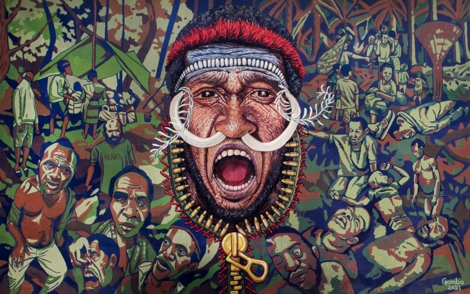
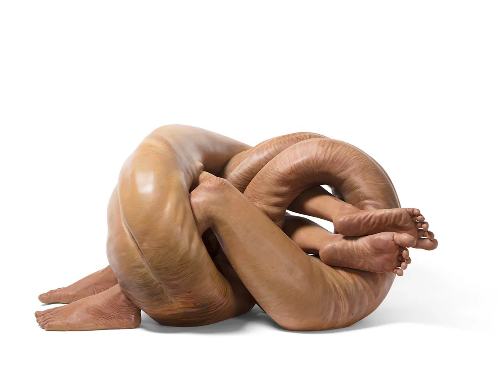
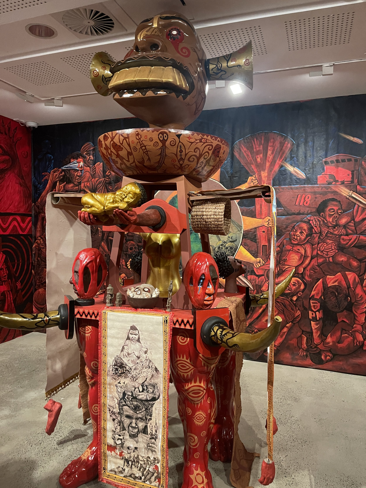
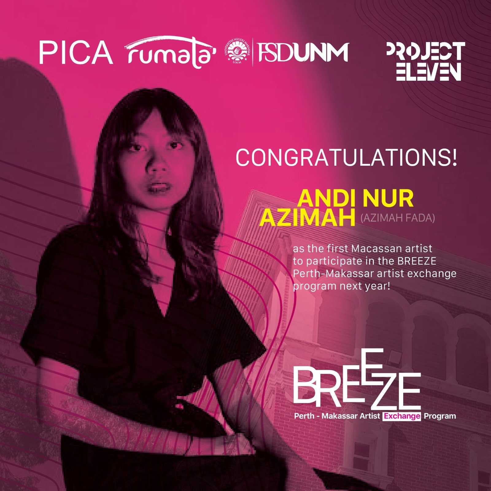

Udeido Collective as part of Sydney Biennale 2024.
15 June - 22 September 2024

Ermas Taufik, Plin Plan (Indecisive) 2013

Udeido Collective (West Papua)
Established in 2018, Udeido Collective’s works visually articulate the situation of the West Papuan people. Their practice touches on the use of conceptual elements from socio-cultural construction that exist in their own society. Reconstruction of these elements is placed as a method for analysing and discussing social issues within society caused by prolonged social-political conflict.

Project Eleven is proud to be partners with Artlink Magazine.
Artlink is a critical space for writing on contemporary art and ideas. We commission new material by a broad range of writers engaged in visual art worlds across Australia and the Asia-Pacific.
Artlink produces three thematic magazines (print and digital) each year, and an evolving mix of online art criticism, reviews, features, interviews and tributes. We hold a longstanding commitment to Indigenous art and cultural practices and manage a publishing program reflective of our multicultural populations and the social, political, ecological and material issues of our times.
Click here to link to Jennifer Yang’s article ‘Indonesia in Ten Thousand Suns: 24th Biennale of Sydney’.
